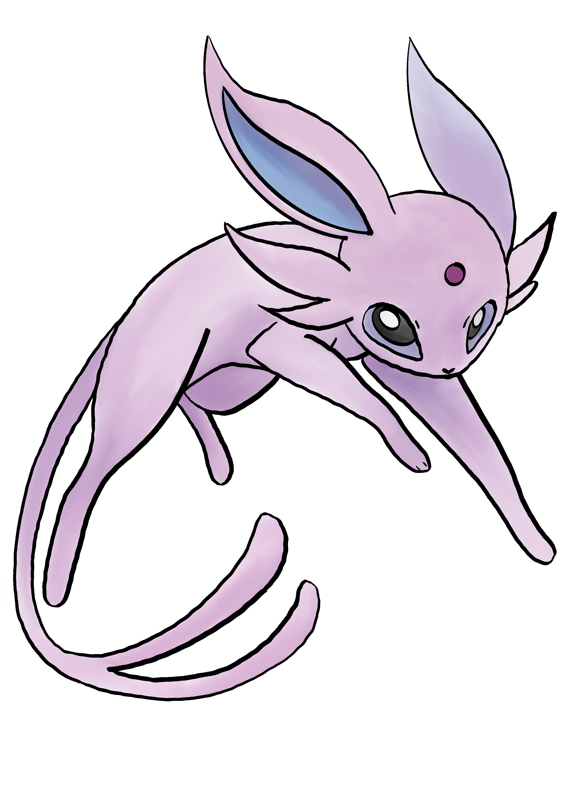
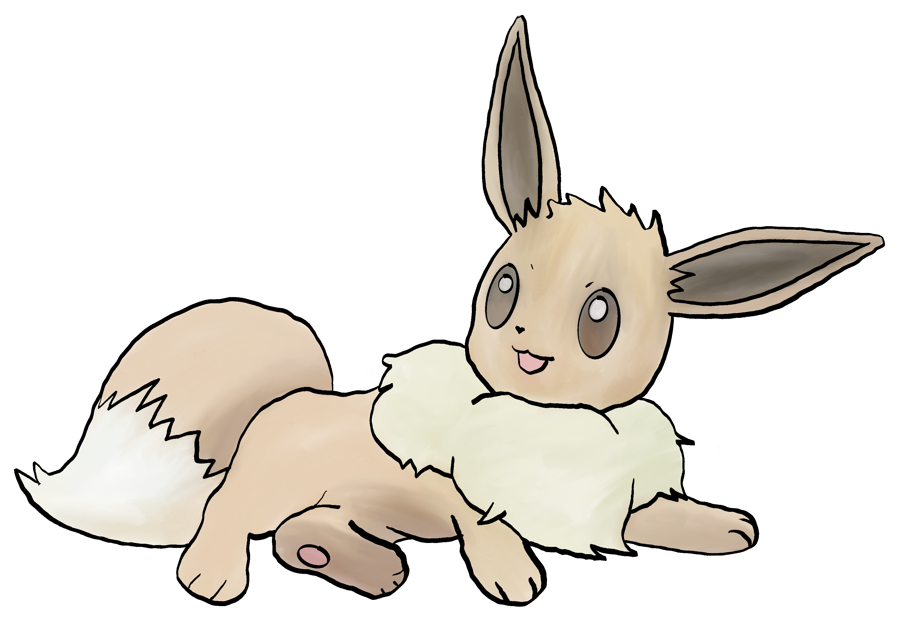
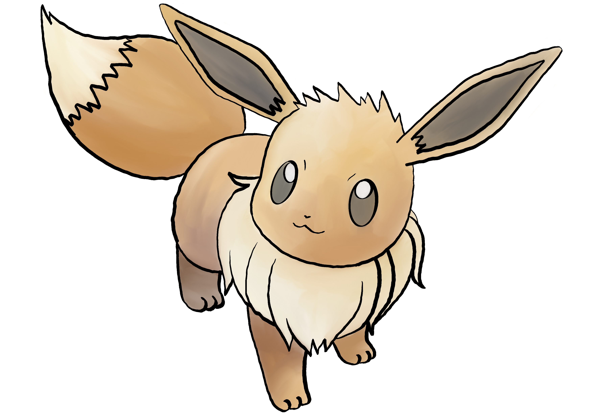
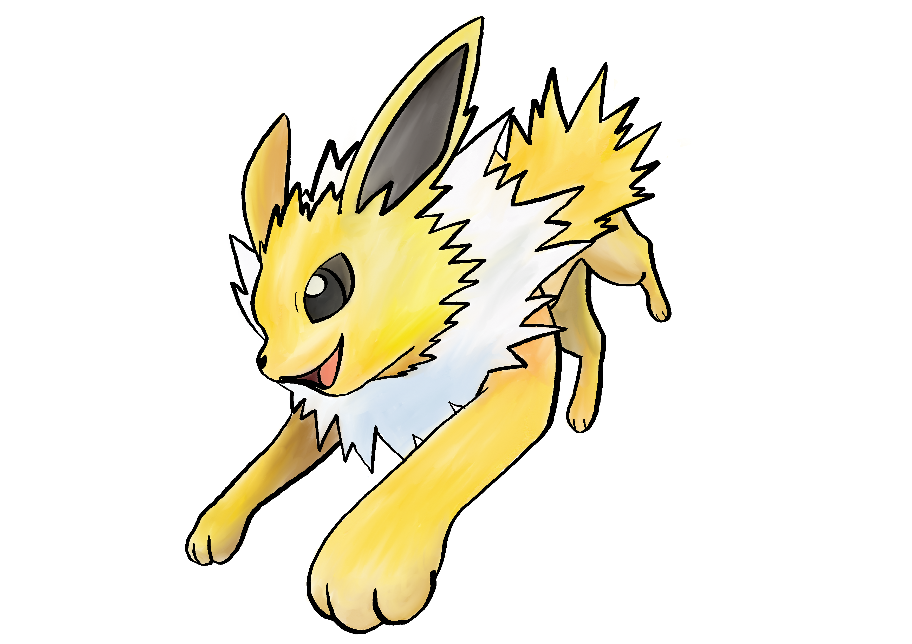
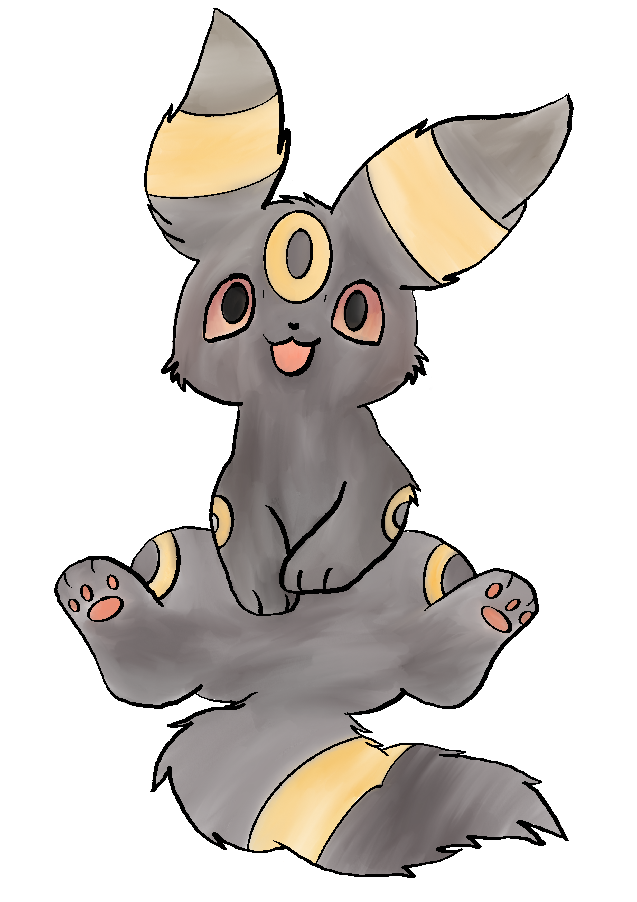
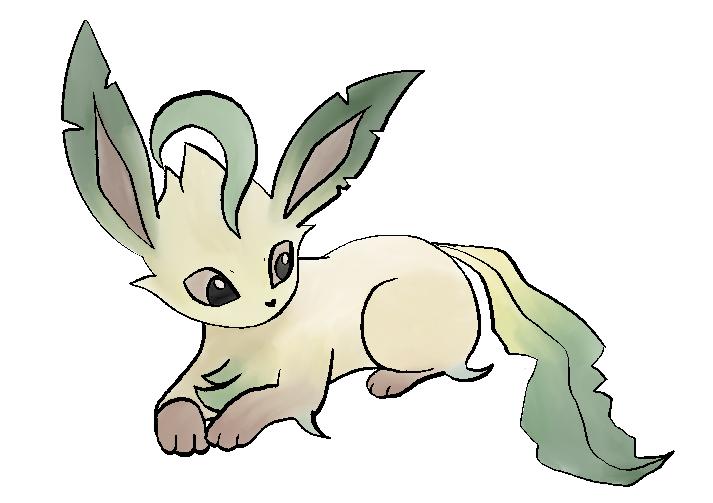

Witaj w świecie Eevee!
Eevee to nie tylko Pokémon - to symbol nieograniczonego potencjału, który drzemie w każdym z nas. Wielu trenerów szuka w świecie Pokémonów czystej siły, ale my wiemy swoje: to właśnie Eevee, z jego uroczym wyglądem i unikalnym kodem genetycznym, skradł nasze serca. To stworzenie udowadnia, że nie musisz być od razu potężnym legendarnym Pokémonem, by dokonywać wielkich rzeczy. Wystarczy odpowiednie środowisko, szczypta zaufania i miłość trenera, by rozwinąć skrzydła i odkryć jedną z ośmiu niezwykłych form!
Dołącz do naszej społeczności! Jeśli tak jak my fascynujesz się ewolucjami Eevee, dzielisz się swoimi fanartami, kolekcjonujesz gadżety lub po prostu uważasz, że Eevee to najwspanialszy towarzysz podróży, to trafiłeś idealnie. Eevee Fandom to miejsce stworzone z pasji, dla pasjonatów. Razem zgłębiamy sekrety ewolucji, analizujemy typy, wymieniamy się doświadczeniami i celebrujemy każdą chwilę spędzoną z tym wyjątkowym Pokémonem. Nie bądź samotnym trenerem. Stań się częścią naszej wielkiej rodziny miłośników Eevee już dziś!

Więcej niż ewolucja
Ewolucja Eevee to prawdziwy fenomen, którego nie da się porównać z żadnym innym Pokémonem. Podczas gdy inne gatunki podążają jedną, wyznaczoną ścieżką, Eevee jest jak czyste płótno, na którym maluje się jego przeznaczenie. Czy będzie to kojący szum fal Vaporeona, elektryzująca energia Jolteona, czy może mistyczne promienie słońca Espeona? Wybór formy to nie tylko zmiana statystyk czy typów – to wyraz więzi, stylu życia i wartości, które wyznaje trener.
Każda ewolucja Eevee niesie ze sobą inną historię. Niektórzy cenią sobie elegancję Sylveona, inni wybierają siłę ognia Flareona, a jeszcze inni zacisze mrocznego Umbreona. W naszym fandomie każda z tych dróg jest równie ważna. Wierzymy, że Eevee wybiera swojego trenera tak samo, jak trener wybiera Eevee – to symbioza idealna. W świecie Eevee nie ma złych decyzji, są tylko nowe możliwości rozwoju.
Czy wiesz, że...?
Moje Fanarty





